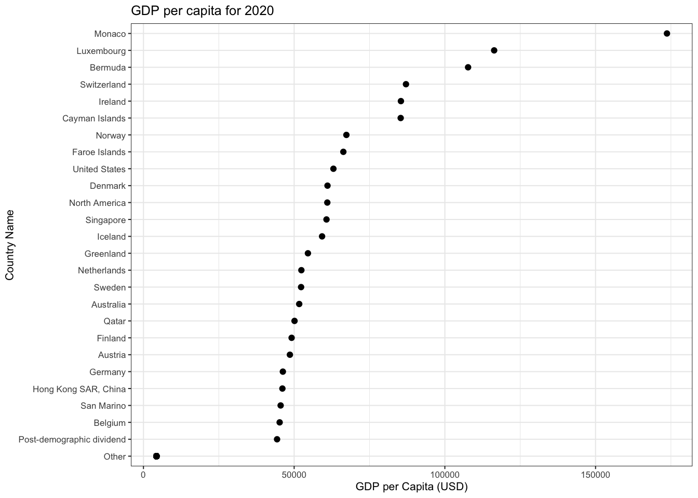
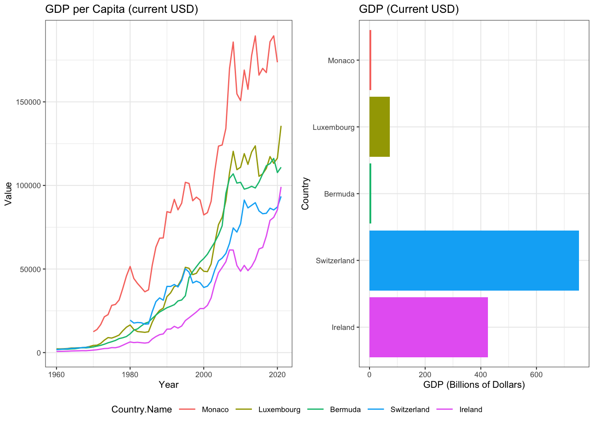
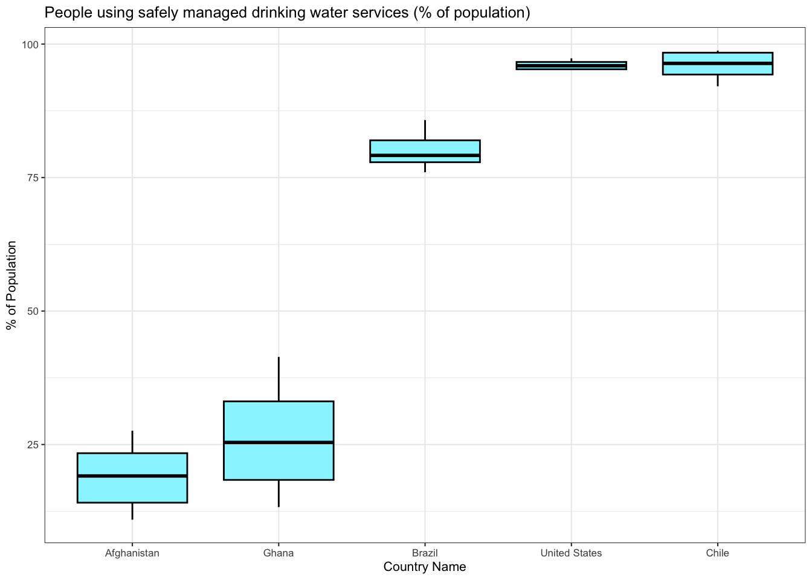
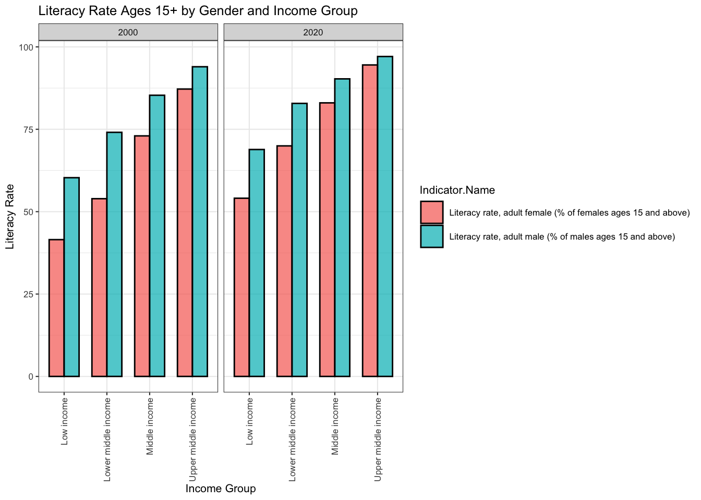

Chapter 4 Results
We proposed to analyze various social, economic, and environmental indicators for various countries over the years. We have broken down our results into three distinct sections with each of them discussing a few relevant indicators.
4.2 Gross Domestic Product
According to wikipedia, Gross domestic product (GDP) is a monetary measure of the market value of all the final goods and services produced and sold (not resold) in a specific time period by countries. We use both GDP and GDP per capita as we want to compare both national economies on the international market (GDP) and living standards between nations (GDP per capita).

Initially, we plot the overall GDP of the world over the years by aggregating individual GDP values. We observe that overall the GDP of the world has risen. Obviously, this trend is expected as the world economy has grown, and more and more countries have started contributing. This is backed by the reduction in the number of missing values over the years. Further, we observe three significant dips in the overall GDP.
Around 2008 (red), the world witnessed the Great Recession.
In 2014 (blue), there was another financial crisis observed in Russia, Brazil where prices of oil barrels dropped by nearly 40%.
In 2019 (green), humanity faced its biggest challenge in Covid-19 leading to a collapse of the stock market.
Now, let’s look at the GDP per capita. The GDP per capita measures a country’s economic output per person and is calculated by dividing the GDP of a country by its population. The below cleveland dot plot shows the GDP per capita across a subset of countries. 
This plot is effective when comparing exact GDP per Capita values. However, all countries cannot be displayed in such a way, thus we used a choropleth map to visualize the 2020 US GDP per Capita across the world.
 Here we can see the US GDP per Capita for 2020 at a country level. The data has been categorized into different classes such that the lighter shades of blue represent lower GDP values and darker shades represent higher GDP values. Any countries colored in black indicate that data was not available.
Here we can see the US GDP per Capita for 2020 at a country level. The data has been categorized into different classes such that the lighter shades of blue represent lower GDP values and darker shades represent higher GDP values. Any countries colored in black indicate that data was not available.
Firstly, it is noticeable that a majority of North American and Asian countries fall between a certain range of GDP values. The GDP per Capita for American countries is on average higher than countries of other continents.
Africa shows a varied range of GDP per Capita acorss countries. It seems to be the only continent for which it is visibly clear at a glance that there is a country in every class of GDP values.
From this graph, there is no indication that the size of a country has correlation with its US GDP per Capita.
The following graphs help focus in on a subset of countries when analyzing US GDP per Capita. Let’s take a closer look at the top 5 countries with the highest US GDP per Capita: Monaco, Luxembourg, Bermuda, Switzerland, and Ireland.
 1. The line graph on the left shows a clear upward trend of GDP per Capita across all countries. The dips in GDP per Capita along the way is likely due to downturn in economic activity or recessions.
The bar chart with corresponding countries on the right depicts the GDP for the country as a whole. Both GDP and population are factors in the per capita equation. This means countries with the highest GDP may or may not have the highest per capita GDP. This is especially clear when comparing the GDP per capita versus GDP for Monaco. While Monaco has the highest GDP per capita, it has the lowest GDP within this subset of countries.
On the other hand, we can see that Switzerland has the opposite relationship between GDP per Capita and GDP. This is likely doe to the speed of GDP rising. If the GDP is rising slower than the population, and the population is increasing, then the per capita GDP would fall.
4.3 Income Disparity
Income inequality refers to how evenly income or income growth is distributed across a population. The higher the income inequality, the less equal income distribution or growth.The dataset has multiple indicators depicting mortality rates based on demographics. The most relevant ones are:
- Income share held by lowest 10%
- Income share held by lowest 20%
- Income share held by highest 20%
- Income share held by highest 10%
The income share is the percentage of the national income received by a segment (10%,20%,etc.) of the population. For example, income share held by highest 10% is the richest 10%.
 Note: since data is not available across all years for all countries, the x-axis varies. All data avalable from 1960-2020
Note: since data is not available across all years for all countries, the x-axis varies. All data avalable from 1960-2020
- Across all countries, the part-to-whole relationship between income share and total seems to be approximately similar.
- There is a significant dip in Venezuela’s total income - this can be attributed to the 5 recessions edured by Venezuela during that time.
- The total income is highest for Kenya and Venezuela, lowest for the United Arab Emirates.
- The United States and the United Kingdom share very similar peaks and dips.
4.4 Environmental Indicators
Lastly, we explored indicators that provide insight into the state of the global environment. We selected the following indicators to analyze:
- Agricultural land (% of land area)
- Child employment in agriculture (% of economically active children ages 7-14)
- CO2 emissions (metric tons per capita)
- Forest area (% of land area)
- Fossil fuel energy consumption (% of total)
Each line in the following plot represents a country. We have a chosen a random sample of 11 countries to better understand the relationship amongst the above indicators within a country and against other countries at a global level. Each indicator is represented by a point on the line. Also, it is important to note that the data has been scaled. This simply means that the data has been transformed such that it fits within a specific range of values. We have done this to be able to better compare different environmental indicators because they are varied units.
 1. Starting at the left most indicator, the percentage of agricultural land. The country with the highest percentage within this particular subset is Togo, while the country with the lowest in this subset is Indonesia.Clearly, there is a huge disparity of the percentage of agricultural land even within just a subset of countries.
1. Starting at the left most indicator, the percentage of agricultural land. The country with the highest percentage within this particular subset is Togo, while the country with the lowest in this subset is Indonesia.Clearly, there is a huge disparity of the percentage of agricultural land even within just a subset of countries.
There seems to be an inverse relationship between CO2 emissions (metric tons per capita),Fossil fuel energy consumption (% of total) and Forest area (% of land area). The sharp peaks pointing down and up are indicative of the fact that the percentage of forest land are tends to be higher when CO2 emissions/ Fossil fuel energy consumption are lower, and vice versa.
It can also be noted that the Child employment in agriculture (% of economically active children ages 7-14) falls at around the same value across all countries. This is possibly due to scaling, we are not able to easily identify the differences between these values.
4.4.1 Water Supply and Sanitation
Safe and readily available water promotes health, improves the quality of the environment and thus, the quality of life in a community.A safely managed drinking water source is one that accessible on premises, available when needed and free from contamination.
The following graph shows the percentage of population distribution using safely managed drinking water services across a subset of countries from 1960 to 2021. Each boxplot represents a country and the bar across each box is the median percent population using safely managed drinking water services.The line extending below each box is the minimum (the smallest number in the set) and above the box is the maximum (the largest number in the set).
 We observe the following:
Right of the bat, it is clear that there exists a huge disparity in the percentage of a population using safely managed drinking water services between different countries.
In this subset of countries, Afghanistan has lowest median of approximately only 13% of the population having access to clean drinking water whereas Chile has the highest at approximately 94%.
Ghana has the largest difference between the minimum and maximum percentage population value.This may indicate that over the years, the population percentages have varied. On the other the US seems to have consistently stayed within high population percentages throughout the years.
4.1 Social Indicators
In the following subsections, we are going to visualize various plots depicting and comparing yearly trends for various indicators. We will also be comparing certain indicators across countries to understand the overall status of development around the world.
4.1.1 Mortality Rates
We start off our discussion with mortality rates. Mortality rate is typically expressed in units of deaths per 1,000 individuals per year . The dataset has multiple indicators depicting mortality rates based on demographics. The most relevant ones are:
. The dataset has multiple indicators depicting mortality rates based on demographics. The most relevant ones are:
One thing that strikes the eye immediately is that the mortality rate for infant male or infant female would be less than the mortality rate of adult male or adult female. This is due to the definition of the indicators for infants. They are calculating number of deaths of male and female infants per 1000 live births whereas adult mortality rates are being recorded per 1000 adults of the respective gender. However, the infant mortality rates would be less than adult mortality rates due to the nature of life.
We observe the following:
The above plot shows the countries that have the maximum mortality rates. To view the trend of mortality rates over the years, we handpick these countries and draw line charts for various mortality rates. We use the trick of faceting to make the process of reading the graph easy and aesthetic at the same time.
We observe the following: 1. The mortality rates have decreased over the years for all countries over the years.
As discussed previously, the adult male mortality rate is greater than adult female mortality rate which in turn is greater than infant mortality rates.
There was a rise in mortality rates from 1990 to 2000 for almost all countries.
This rise could be attributed to a myriad of region specific reasons - new diseases/illnesses, lack of physical activity, increased tobacco usage, lack of proper nutrition, among others.
4.1.2 Life Expectancy
Life expectancy at birth is a measure of the average number of years a person is expected to live based on the current death rates.(wikipedia) The dataset has multiple indicators depicting mortality rates based on demographics. The most relevant ones are:
In the below plot, we can see the life expectancy for males versus females across four different years: 1960,1980,2000,2020.For every year, the subplot contains the average life expectancies of 266 different countries.
The diagonal line serves as a reference, a dot that lies exactly on the line represents a country whose life expectancy for a male and female are equal.
We observe the following:
Across all four years, most of the data points lie above the reference line - this indicates that average life expectancies for women are consistently higher than those of males.
Over time, there is a slight upward shift in the data points - which indicates that the difference between male and female expectancies is increasing.
There is also clear shift in the data points towards the top right corner which depicts the fact that life expectancy has been increasing, regardless of gender.
This shift can likely be interpreted as the effect of medical progress and technological advancement in health care.
4.1.3 Literacy Rates
Literacy rate is defined by the percentage of the population of a given age group that can read and write.(wikipedia) A high literacy rate suggests the existence of an effective primary education system and/or literacy programs that have enabled a large proportion of the population to acquire the ability to read or write. The adult literacy rate corresponds to ages 15 and above.
The below plot depicts the relationship between income groups and literacy rates by gender in 2020 and 2022. Each income group represents a group of people in a population that have incomes within the same range.

We observe the following:
There is a clear positive correlation between income group and literacy rates for male and female adults. As we move up in the income group, the literacy rate also tends to increase for both genders.
Regardless of income group, males have a higher literacy rate than females.
There is a slight increase in literacy rate across all income groups and genders from 2020 to 2022.
This increase is likely due to education becoming more accessible due to development of technology.